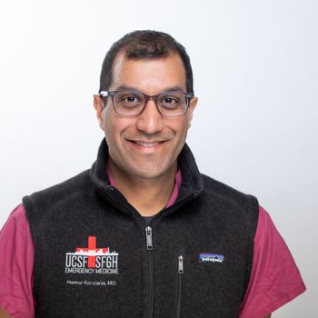

The digital innovation team at Zuckerberg San Francisco General Hospital.
Pioneering Research and Organizational Solutions to Promote Equitable Care through Technology
We apply technology and digital tools to improve health outcomes and equity in vulnerable and underserved populations, and we deploy what we build inside the hospital's own electronic health record.
Systems in daily use across the hospital, built with clinicians and operational leaders in the Kaizen Promotion Office.
Heart failure
Standardized inpatient heart failure care with AI and EHR automation. The initiative reduced readmission rates, reduced heart failure mortality rates and closed equity gaps in care between Black/African American patients with heart failure and the general heart failure population.
Chest pain pathway
A decision-support pathway in the emergency department, with patients evaluated faster and with fewer downstream tests.
Valve disease
AI identifies severe valve disease and routes patients to treatment.
Whole Person Navigator
AI that summarizes a patient's medical and social history for social workers. The 23 inpatient social workers at ZSFG together spend more than 300 hours a week reviewing charts before they see patients, and the Navigator gives that time back to patient care. In validation it matched human reviewers as often as the reviewers matched each other.
Clinicians, engineers and data scientists working inside the hospital.

Institutional home
Recent news
All newsJanuary 2026
Our team is looking for a (senior) AI engineer. If you are interested, please check out the posting.
December 2025
Our research on how AI could help social workers review patient records was presented at the NeurIPS GenAI4Health workshop and accepted for oral presentation at AAAI. Read the paper.
December 2025
Work on building compact, transparent AI models for healthcare was accepted at NeurIPS. BC-LLM learns fully interpretable risk prediction models clinicians can use at the bedside. Read more.